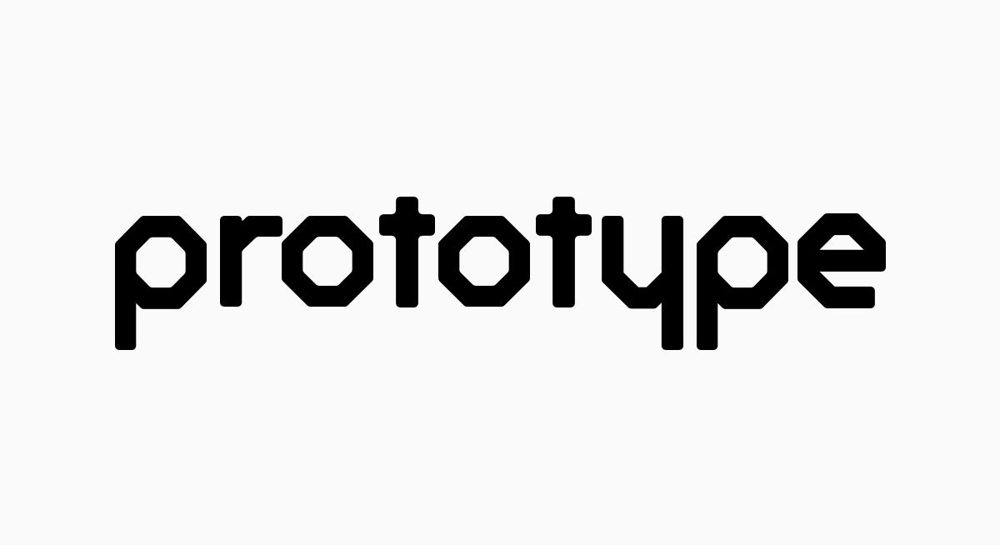
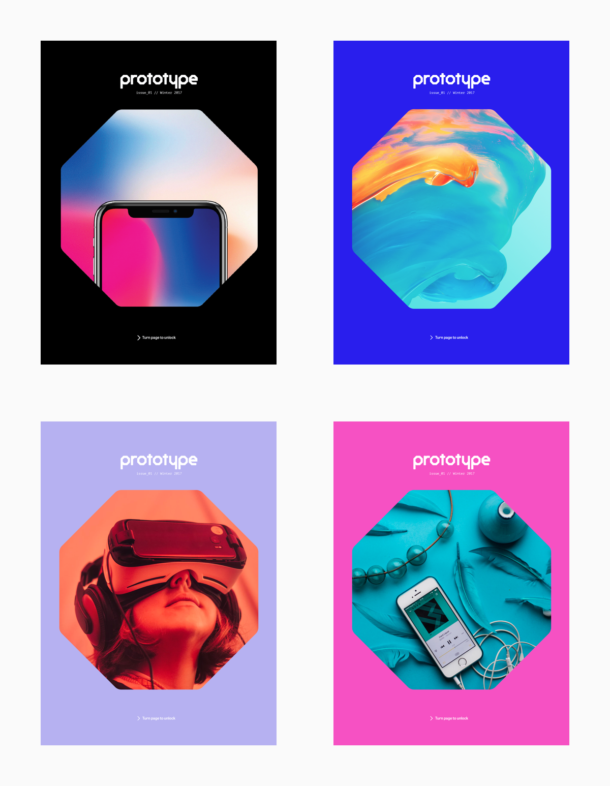
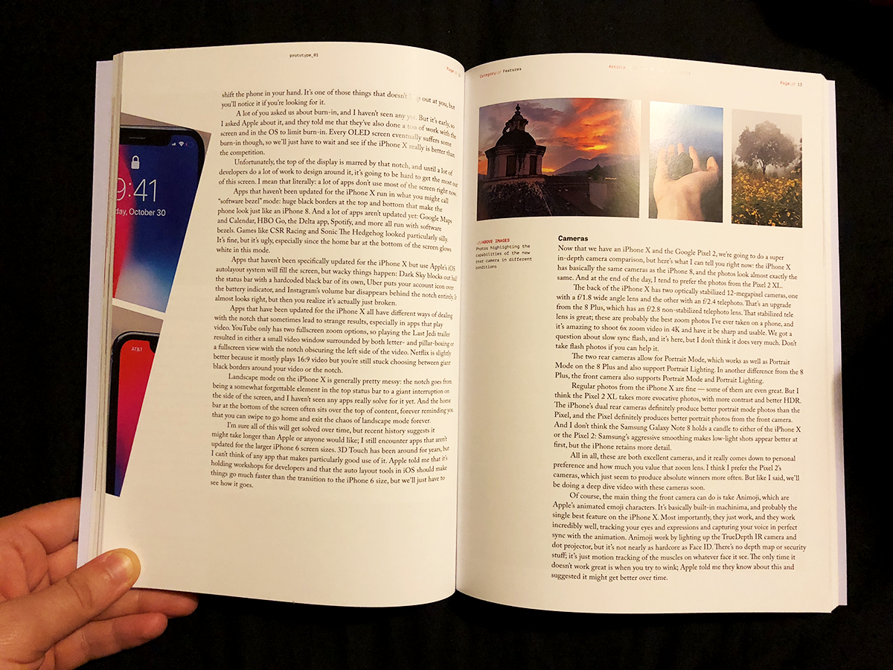
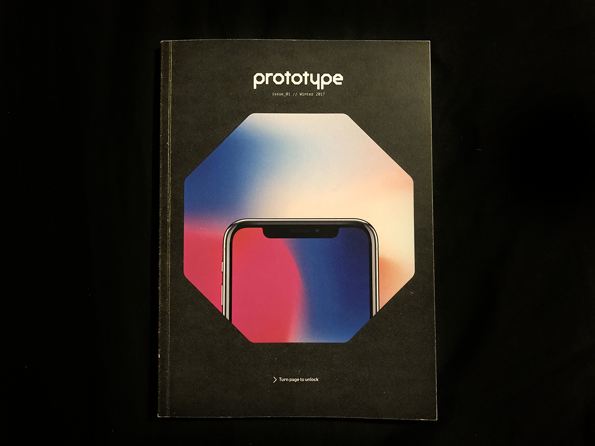
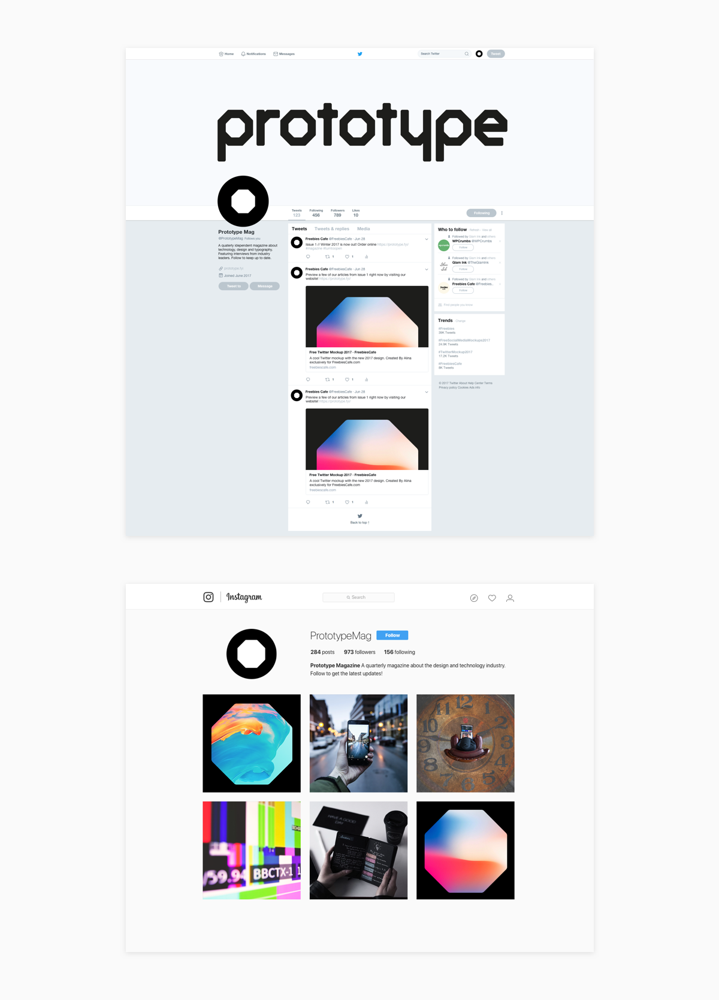
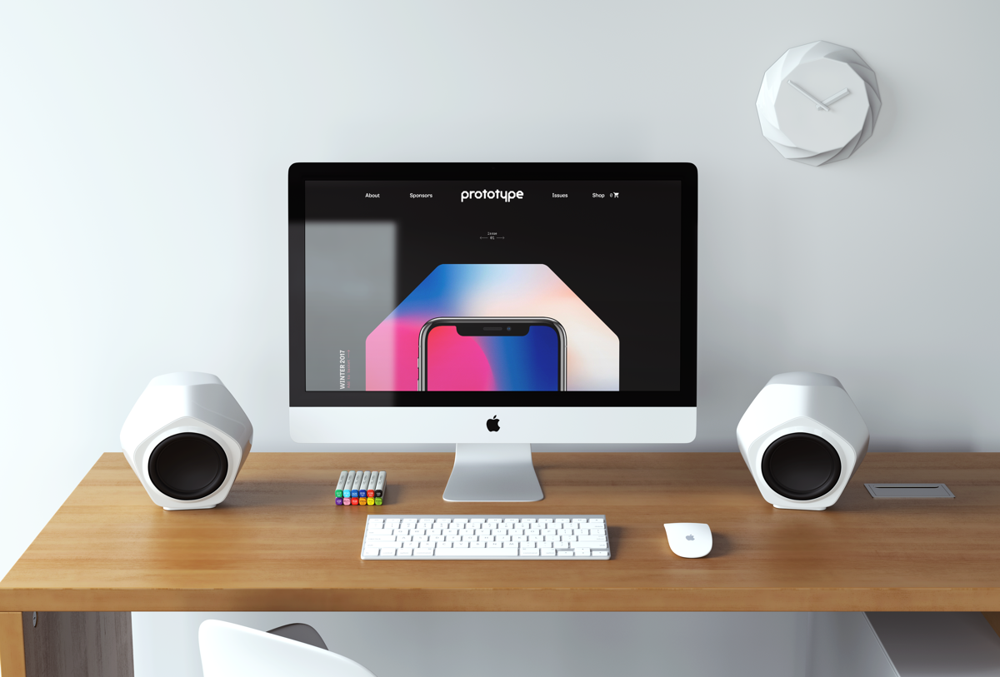

Prototype
Creating a magazine
Background Information
THE BRIEF
Curu is an early stage start-up company based in America. They want to build a product which helps American students understand and improve upon their credit score, while also making the process of managing money more fun and engaging.
The Concept
The idea I came up with was a magazine called Prototype. This is a quarterly magazine about technology and its relation to digital design. The primary audience is user interface/user experience designers with the magazine acting as a way for them to take some time away from the screen. Prototype is both informative and helps designers improve upon there craft.
Each issue will feature interviews, thoughts and essays from designers within the technology industry. The featured article section, exhibiting the latest news, reviews and articles from the world of technology, plus the section dedicated to exploring the past, present and future of digital typography both allow this magazine to uniquely appeal to both members of the general public with a keen interest in technology, and professional graphic designers.
The Identity
After experimenting with several ideas I settled upon a brand identity which used octagons in place of the o’s in the name Prototype. I had decided this approach was the best as I felt it was the best reflection of what I wanted the overall concept of the magazine to be. I then took the octagon I had created for the o’s and turned it into a custom word mark which would be used as the logo. The octagons would then be used as a major part of the overall branding.
This is the final logo that I came up with. This is custom made type. The octagons feature heavily throughout the branding.
The brand has a 4 colours in the primary colour palette: pure white, pure black, prototype white and prototype red. You can see these colours used consistently throughout all elements of the magazine. Each issue then has its own secondary colour palette consisting of 2 colours. One colour will be used for the background on the cover of the magazine. The other colour will be used internally in the magazine to create sections. This colour is chosen by taking a colour from within the artwork on the cover and then lowering its opacity.
The Magazine
The cover features a background colour (which changes every issue) and then some form of artwork inside the octagon. The octagon allows for a highly flexible front cover as it allows for a huge variety of design approaches. Some issues may use the octagon to hint at what is inside the magazine, others issues may use it to show off a piece of artwork or photography. It can also be used to alter the magazine physically. For example the octagon can be used as a cut out, with the design to being printed on the end papers. This range flexibility makes receiving the magazine much more exciting for the readers.
A mock-up of covers to show how the cover works as a series. These are potential covers for the first 4 issues of the magazine.
The magazine uses 3 different typefaces. The typefaces are used throughout both the magazine and website and each typeface has different use case scenarios. These are:
- Adobe Caslon Pro: mused primarily as body text in the longer and more formal articles due to its high readability.
- Tablet Gothic: this typefaces contains a lot of personality so used for headings and subheadings throughout the magazine. The personality the typeface creates is also perfect for less formal articles such as interviews as it creates a much more relaxed personality.
- PT Mono: the monospaced typeface matches the brand identity perfectly. This typeface is best used in smaller sizes and is perfect for additional information which maybe required such as captions
The different typefaces I used in the magazine along with the different weights.
The magazine uses sections to create a simple and easy to navigate structure. Each section is easy to find within the magazine as they are started by coloured double page spreads. This colour is the issue colour mentioned in the secondary colour palette. The spread also features a quick summary of what each article is about. There are 6 sections in total, these are:
- Features: these are the featured articles in the magazine and can be about any topic which is appropriate to the magazine.
- Showcase: features designs and case studies submitted by the readers.
- Interviews: consists of interviews from designs and creators.
- Thoughts: news, essays and critiques about design.
- Typography: putting the type in Prototype, this section explores digital typograhy news.
- Extras: includes book reviews, the job board and words from the sponsors.
The contents page from the printed out edition
The whole magazine uses a 12 column layout. 12 columns allows the use of several different layouts for different types of articles. A 4pt baseline grid sits on top of the columns. This baselines grid ensures that the type is consistently places throughout all pages of the magazine. This baseline grid should also be applied to images so that they flow nicely in each article.
A look at the double page spread of a feature article

A look at the double page spread of an interview. Note that Tablet Gothic has been used as this is more of an informal article.
After designing the magazine we had to print it off on our selected stocks and bind it together. I decided to go with perfect binding. The magazine cover uses Edixion 300gsm, this paper stock provides a smooth and tactile finish. The text pages use Lumi-silk 130gsm, this stock is a heavy enough weight to stop make double sided printing work effectively and the silk finish allows the inks to shine.
Translating to web
Prototype has a strong online presence which carries over many of the characteristics from the printed version. In order to encourage people to buy the magazine the website contains a shortened version of one of the articles from each section. The rest of the articles are locked and when a reader clicks on them they are taken to a page which hides all of the content and encourages the viewer to purchase the article.
The article page has been designed to make sure it is readable as possible. To do this there is around 70 characters per line. As the articles tend to be long a larger type size has been used, this should help reduce eye strain and also stop uses getting distracted by there being too many lines of text on the screen at once.
A look at how brand can be carried over to platforms like instagram and twitter.
Mock-up of the website on a 5k iMac
Conclusion
I believe this was a very successful project. The brand identity works extremely well online and in print. The magazine has also been translated into an online presence and there is a clear link between them. I would however like to produce the whole magazine and just articles from each section, this would be the ultimate test on whether the navigation would still be as successful and would also be a good test to see if the layout is too repetitive.
As someone who never really enjoyed editorial design I went into this project thinking I was not going to do well. However this project has really made me fall in love with editorial and I was so pleased with the final outcome.
TL;DR
As part of a university module I was tasked with creating a magazine. This involved coming up with the concept, business strategy, branding, a printed version and an online translation of the magazine. I would love to continue working on this project at some point in the future, if you think this magazine is a a great idea or want to contribute in anyway please let me know.